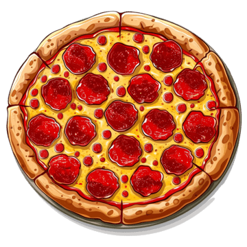
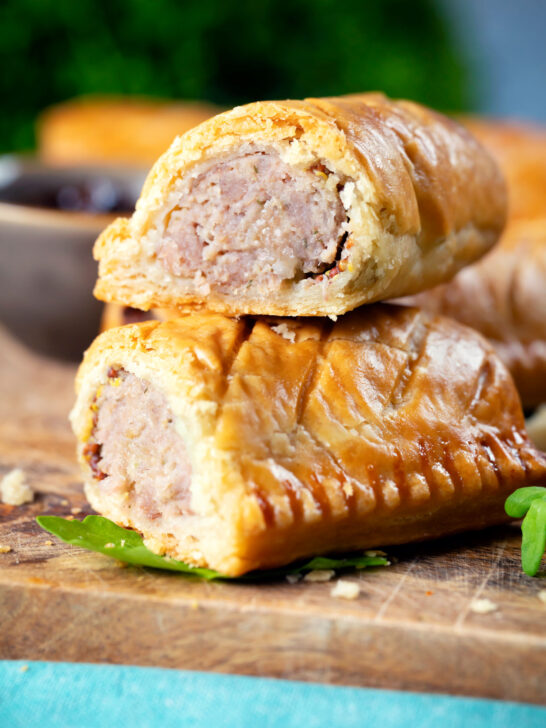

what is pizza?
Pizza is a flat, round base of leavened wheat dough topped with tomato sauce, cheese, and various ingredients, baked in an oven. It originated in Naples, Italy, and has grown into one of the world's most popular comfort foods.

What is sausage rolls
A sausage roll is a savoury dish, popular in current and former Commonwealth nations, consisting of sausage meat wrapped in puff pastry. Although variations are known throughout Europe and in other regions, the sausage roll is most closely associated with British cuisine. The British bakery chain Greggs sells around 2.5 million sausage rolls per week, or around 140 million per year.